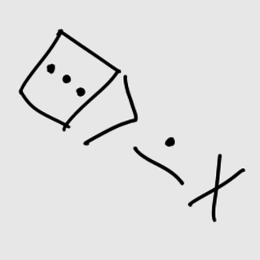

Hello, I'm a physics student interested in a wide range of subjects, including music and computer science. Olá, eu sou um estudante de física interessado em vários assuntos, incluindo música e ciencias da computação. toki. mi jan sona pi sona Pisika. mi wile sona e sona mute sama ni: kalama musi en sona pi ilo sona.
Interactive stuff on browser: Coisas interativas no navegador: sina ken kepeken musi e ni:

Mandelbrot kulupu Mandelbrot
An intractive mandelbrot visualization written with JavaScript and WebGL. Uma vizualização interativa do mandelbrot escrita em JavaScript e WebGL. lukin e sitelen Mandelbrot. sina ken kepeken musi e ona. mi pali e ona kepeken ni: ilo JavaScript en ilo WebGL.
Quantum Simulator Simulador Quântico ijo pi pali sama pi ijo sona nasa
A quantum computer simulator. Um simulador de computador quântico. ijo ni li pali e ijo sama pi ijo sona nasa.
Donate: Doações: pana e mani:
This site accepts donations via BAT. Esse site aceita doações via BAT. lipu ni la sina ken pana e mani BAT tawa mi.
Monero: mani Monero: 42jHqUsEke6V9w9pcHZiGf3NNPd6ZiRiZUAxZ3YuML7CinY3RJqWaS4CQB2JisXVwn5h7kx9WwSoDifgiEW6j4C5JGd93Mz